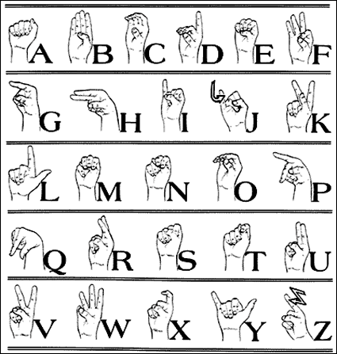

The ASL alphabet consists of hand signs for each letter of the English alphabet. Here’s a brief overview:
Image: American Sign Language Alphabet.gif
Image by Jazz Davis from Wikimedia Commons, licensed under CC BY-SA 4.0.
- A: Make a fist with your thumb alongside your fingers.
- B: Extend your fingers straight up while keeping your thumb folded against your palm.
- C: Form a "C" shape with your fingers and thumb.
- D: Extend your index finger while keeping the other fingers folded.
- E: Curl your fingers to touch the tips of your thumb
- F: Form a circle with your thumb and index finger while keeping the other fingers extended.
- G: Extend your index finger and thumb while keeping the other fingers folded.
- H: Extend your index and middle fingers while keeping the other fingers folded.
- I: Extend your pinkie finger while keeping the other fingers folded.
- J: Trace the shape of the letter "J" in the air with your pinkie finger.
- K: Extend your index and middle fingers while placing your thumb between them.
- L: Form an "L" shape with your index finger and thumb.
- M: Fold your thumb over your fingers and extend your fingers downward.
- N: Fold your thumb over your fingers, leaving your index finger extended.
- O: Form a circle with your fingers and thumb.
- P: Extend your index and middle fingers while keeping your thumb between them.
- Q: Extend your index finger and thumb, and curl them downward.
- R: Cross your index and middle fingers while keeping the other fingers folded.
- S: Make a fist with your thumb placed in front of your fingers.
- T: Extend your thumb while keeping your other fingers folded.
- U: Extend your index and middle fingers while keeping the other fingers folded.
- V: Extend your index and middle fingers while forming a "V" shape.
- W: Extend your index, middle, and ring fingers while keeping the other fingers folded.
- X: Form a hook shape with your index finger.
- Y: Extend your thumb and pinkie while keeping the other fingers folded.
- Z: Trace the shape of the letter "Z" in the air with your index finger.